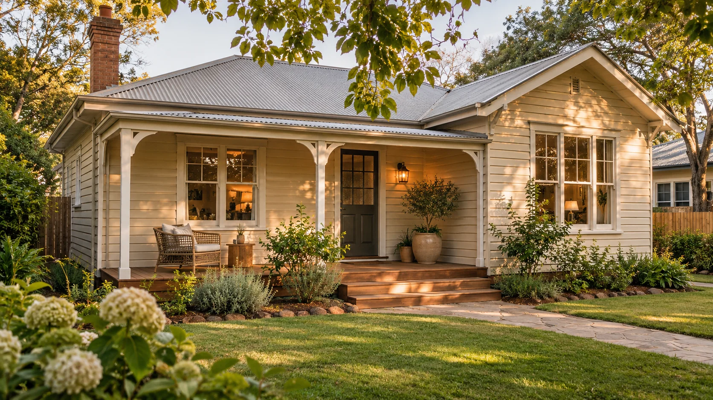

Residential investment & renovation
A new chapter
for older homes.
We buy houses with room for a fresh start, renovate them, and bring them back to life for their next owners or renters.
View renovation concepts
The AM approach
See what a house
can become.
An older home can have more life ahead of it. AM focuses on the full journey, from buying a house to preparing it for its next chapter.
- 01
Buy with potential in mind
AM buys older houses to renovate. Property fit, location, condition and purchase terms need an individual conversation.
- 02
Renovate and repair
Remodeling and repairs turn the purchase into a renewed home. The work depends on what each property needs.
- 03
Make room for what’s next
The finished home can return to the market for sale or become a rental, depending on the property and plan.
AM design notebook
One kitchen, two possibilities.

The sash window anchors both designs. In the imagined renovation, oak counters echo its original trim, and pale tile carries daylight across the worktop.
The next chapter
A home to own.
A place to rent.
AM’s work can lead to either. A renovated house may be offered for sale or held as a rental.
Property availability
No verified sale or rental listings have been supplied for this website draft.
Homes for sale
Listings will appear only when property details and availability are confirmed.
Homes for rent
Rental details, requirements and contact information are pending confirmation.
This page is not an offer to sell or lease a property.
Start with a few details
Prepare your
conversation.
Thinking about selling an older house, buying a renovated home, or finding a rental? Make a short checklist for when AM’s contact details are ready.
Contact is not live yet.
This tool stays in your browser. Nothing is sent or saved. Do not enter an address, financial information or other private details.
Your next step
Choose a topic and build a checklist. You can review it here without submitting any information.
About AM
Working with what’s here.
AM is a real estate investment and renovation company focused on older houses. We buy the house ourselves, plan repairs around the building, and prepare it for its next owner or renter.